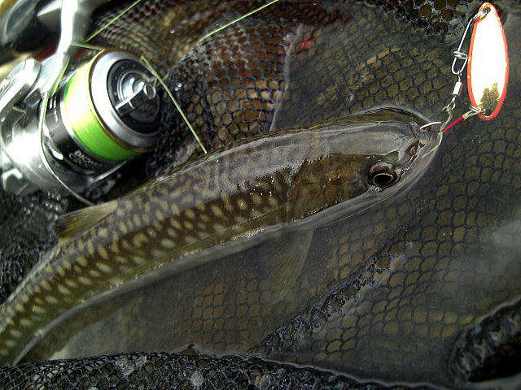
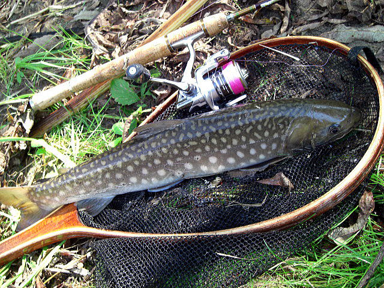
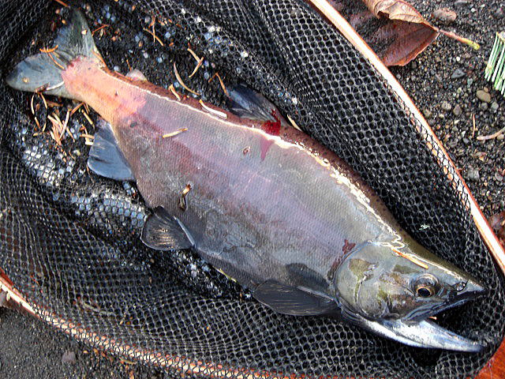

| ２０１４年８月２３日 ニジマス５０センチ（AKNPRK滝下） |
| ２０１４年８月３０日 ニジマス２２センチ（SRBT） |
| ２０１４年８月３０日 ニジマス２５センチ（SRBT） |
| ２０１４年８月３０日 ニジマス３２センチ（１） （STNI） |
| ２０１４年８月３０日 ニジマス３２センチ（２） （STNI） |
| ２０１４年８月３０日 アキアジ７８センチ（１） （ONBT） |
| ２０１４年８月３０日 アキアジ７８センチ（２） （ONBT） |
| ２０１４年８月３０日 アキアジ７８センチ（３） （ONBT） |
| ２０１４年８月３１日 アキアジ？センチ（１） （KSR_NNSBT合流） |
| ２０１４年８月３１日 アキアジ？センチ（２） （KSR_NNSBT合流） |
| ２０１４年９月３日 ニジマス４２センチ（AKNPRK滝下） |
| ２０１４年９月３日 ヤマメ２２センチ（OSTBT） |
| ２０１４年９月１４日 イワナ（ＫＫＣ） |
| ２０１４年９月１４日 ニジマス（ＫＫＣ） |
| ２０１４年９月１５日 ヤマメ（SHORDM下の川） |
| ２０１４年９月１５日 アメマス３９センチ(1) エッグフライ（SHORDM下の川） |
| ２０１４年９月１５日 アメマス３９センチ(2) （SHORDM下の川） |
| ２０１４年９月１７日 ノーシンカー （ONBT） |
|  |
| ２０１４年９月１７日 アメマス（ONBT） |
| ２０１４年９月２１日 アメマス（MR） |
| ２０１４年９月２１日 アメマス（ＯＮＢＴ） 当日10匹程度 |
| ２０１４年９月２１日 アメマス（ＯＮＢＴ） |
|  |
| ２０１４年９月２１日 アメマス遡上４８センチ（HRR） 当日４匹程度 |
 |
| ２０１４年９月２７日 アメマス遡上（HRR） 当日５匹程度 |
| ２０１４年９月２７日 アメマス遡上４６センチ(1) （HRR） |
| ２０１４年９月２７日 アメマス遡上４６センチ(2) （HRR） |
| ２０１４年９月２７日 イワナ （MHRR） 当日７匹程度 |
| ２０１４年９月２７日 ヤマメ （MHRR） |
| ２０１４年９月２７日 アメマス 尺 （MHRR） |
| ２０１４年９月２８日 アメマス （CHR TNTK下）当日６匹程度 全部尺ちょっと。知人７０センチの雨上げた。 |
| ２０１４年１０月４日 アメマス遡上４４センチ(1) （CHR TNTK下） 月虫66激沈11g |
| ２０１４年１０月４日 アメマス遡上４４センチ(1) （CHR TNTK下） 月虫66激沈11g |
| ２０１４年１０月５日 ニジマス（ＮＫＣ） 当日７匹程度 |
| ２０１４年１０月５日 イワナ（ＮＫＣ） 当日７匹程度 |
| ２０１４年１０月７日 ニジマス （CHR TNTK上） 鮭は少なくなっていた。 |
| ２０１４年１０月１１日 ニジマス この日はニジマス６本。（SHOR_DM２本目橋の車止） |
| ２０１４年１０月１１日ニジマス（SHOR_DM_ヘアピン） |
| ２０１４年１０月１１日ニジマス３３センチ（SHOR_DM_ヘアピン） |
| ２０１４年１０月１２日 イワナ（NSBT） この日はイワナのみ５本。 |
| ２０１４年１０月１８日 山女（MSTR） この日は２時間10本程度。 |
| ２０１４年１０月１８日 雨鱒（MSTR） この日は２時間10本程度。 |
| ２０１４年１０月１９日 山女（KOTRO） 橋前後50m 5本程度。 |
| ２０１４年１０月１９日 雨鱒（KOTRO） 橋前後50m 5本程度。 |
| ２０１４年１０月３０日姫鱒３３センチオス。婚姻色。 （KSRKO 津別峠入り口から右に入る） スプーン１０尾、ミノー２０尾 |
| ２０１４年１０月３０日姫鱒３４センチオス。婚姻色。 （KSRKO WKT西） スプーン１０尾、ミノー２０尾 |
| ２０１４年１０月３０日姫鱒３５センチオス。婚姻色。 （KSRKO WKT西） スプーン１０尾、ミノー２０尾 |
| ２０１４年１０月３０日姫鱒メス。婚姻色。 （KSRKO WKT西） スプーン１０尾、ミノー２０尾 |
| ２０１４年１１月８日 （KSRKO 津別峠入り口から右に入る） |
|  |
| ２０１４年１１月８日姫鱒オス。婚姻色。相当な数を目視するが、ミノーへの食いつきが悪い。 ミノーで６匹程。 （KSRKO 津別峠入り口から右に入る） |
| ２０１４年１１月８日遡上アメマス４５センチ。ミノーDENS ６センチ １０ｇ。 （TOUBT上流） |
| ２０１４年１１月８日遡上アメマス３６センチ。ミノー月虫66激沈11g （TOUBT上流） |
| ２０１４年１１月１６日ニジマス３４センチ（SHOR_DM_ヘアピン）ミノーＤＥＮＳ５センチ７g |
| ２０１４年１１月２２日 MSTR,KKC ポイント３箇所坊主 |
| ２０１４年１２月２８日遡上アメマス４２センチ(1)。ミノー月虫66激沈11g （NHNMT） |
| ２０１４年１２月２８日遡上アメマス４２センチ(2)。ミノー月虫66激沈11g （NHNMT） |
| ２０１４年１２月２８日遡上アメマス５０センチ。ミノーＤＥＮＳ５センチ７g （TORO アウトレット） |